2022 Higher Biology - Paper 2 questions
Source: Scottish Qualifications Authority (SQA) / Qualifications Scotland. This is a StemInteract HTML companion, not an official HTML edition. Selectable text is supplied alongside original page images. Use the images or original PDF for equations, powers, fractions, vector notation, tables and diagrams; text extraction cannot fully preserve mathematical layout.
Jump to a question
PDF page 1
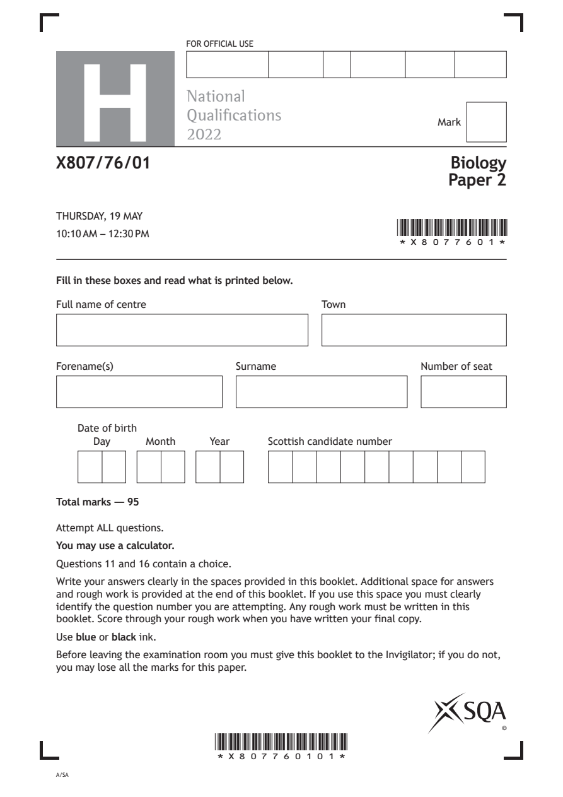
Selectable page text
FOR OFFICIAL USE
H
National
Qualications
Mark
2022
X807/76/01 Biology
Paper 2
THURSDAY, 19 MAY
10:10 AM – 12:30 PM
*X8077601*
Fill in these boxes and read what is printed below.
Full name of centre Town
Forename(s) Surname Number of seat
Date of birth
Day Month Year Scottish candidate number
Total marks — 95
Attempt ALL questions.
You may use a calculator.
Questions 11 and 16 contain a choice.
Write your answers clearly in the spaces provided in this booklet. Additional space for answers
and rough work is provided at the end of this booklet. If you use this space you must clearly
identify the question number you are attempting. Any rough work must be written in this
booklet. Score through your rough work when you have written your final copy.
Use blue or black ink.
Before leaving the examination room you must give this booklet to the Invigilator; if you do not,
you may lose all the marks for this paper.
©
*X807760101*
A/SAPDF page 2
Paper 2, Question 1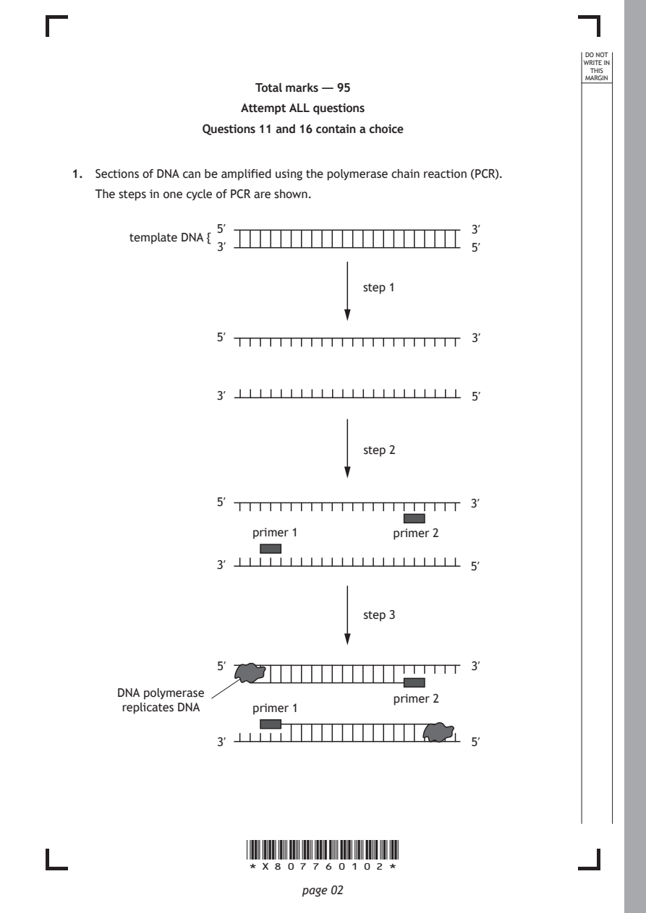
Selectable page text
DO NOT
WRITE IN
THIS
MARGIN
Total marks — 95
Attempt ALL questions
Questions 11 and 16 contain a choice
1. Sections of DNA can be amplified using the polymerase chain reaction (PCR).
The steps in one cycle of PCR are shown.
5′ 3′
template DNA {
3′ 5′
step 1
5′ 3′
3′ 5′
step 2
5′ 3′
primer 1 primer 2
3′ 5′
step 3
5′ 3′
DNA polymerase
primer 2
replicates DNA primer 1
3′ 5′
*X807760102*
page 02PDF page 3
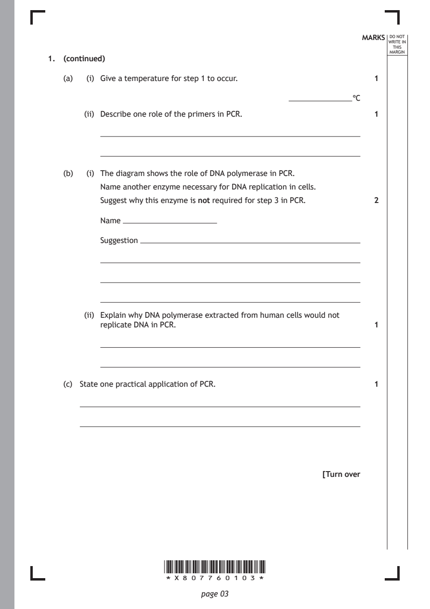
Selectable page text
MARKS _{W}^{D}_{R}^{O}_{I} _{T}^{N}OT
E IN
THIS
MARGIN
1. (continued)
(a) (i) Give a temperature for step 1 to occur. 1
°C
(ii) Describe one role of the primers in PCR. 1
(b) (i) The diagram shows the role of DNA polymerase in PCR.
Name another enzyme necessary for DNA replication in cells.
Suggest why this enzyme is not required for step 3 in PCR. 2
Name
Suggestion
(ii) Explain why DNA polymerase extracted from human cells would not
replicate DNA in PCR. 1
(c) State one practical application of PCR. 1
[Turn over
*X807760103*
page 03PDF page 4
Paper 2, Question 2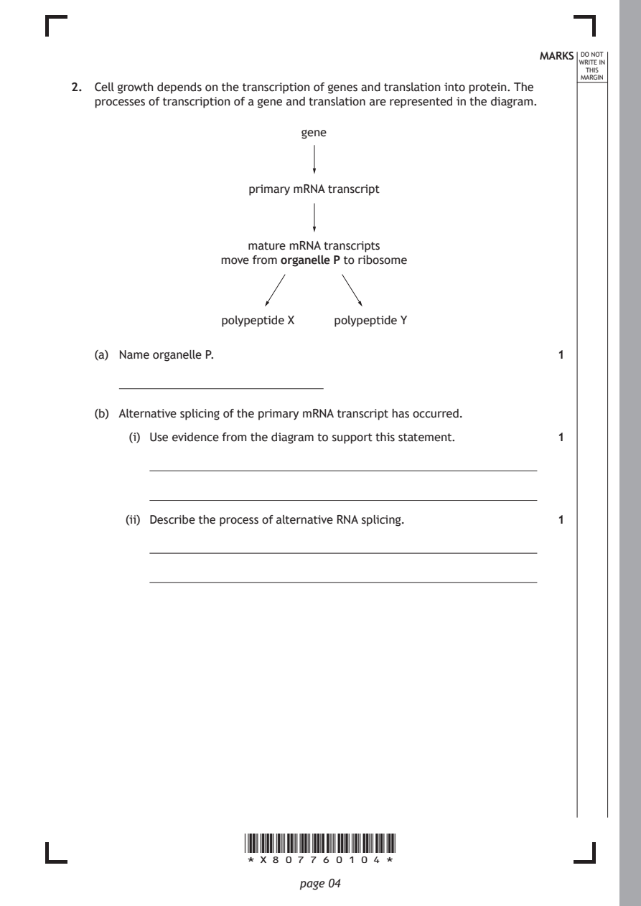
Selectable page text
MARKS _{W}^{D}_{R}^{O}_{I} _{T}^{N}OT
E IN
THIS
MARGIN
2. Cell growth depends on the transcription of genes and translation into protein. The
processes of transcription of a gene and translation are represented in the diagram.
gene
primary mRNA transcript
mature mRNA transcripts
move from organelle P to ribosome
polypeptide X polypeptide Y
(a) Name organelle P. 1
(b) Alternative splicing of the primary mRNA transcript has occurred.
(i) Use evidence from the diagram to support this statement. 1
(ii) Describe the process of alternative RNA splicing. 1
*X807760104*
page 04PDF page 5
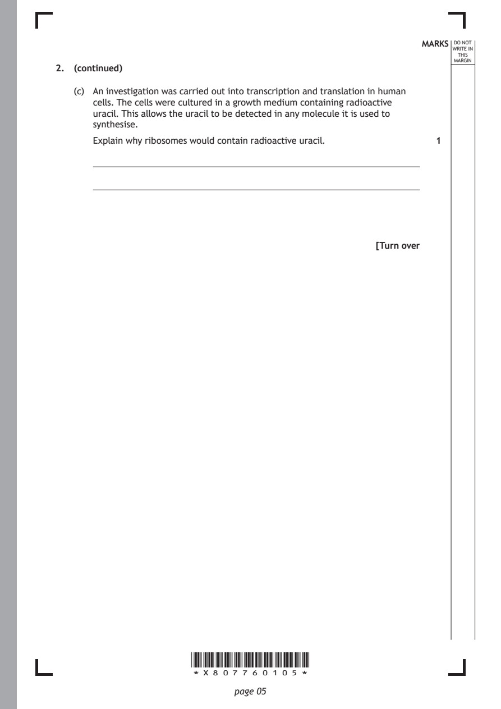
Selectable page text
MARKS _{W}^{D}_{R}^{O}_{I} _{T}^{N}OT
E IN
THIS
MARGIN
2. (continued)
(c) An investigation was carried out into transcription and translation in human
cells. The cells were cultured in a growth medium containing radioactive
uracil. This allows the uracil to be detected in any molecule it is used to
synthesise.
Explain why ribosomes would contain radioactive uracil. 1
[Turn over
*X807760105*
page 05PDF page 6
Paper 2, Question 3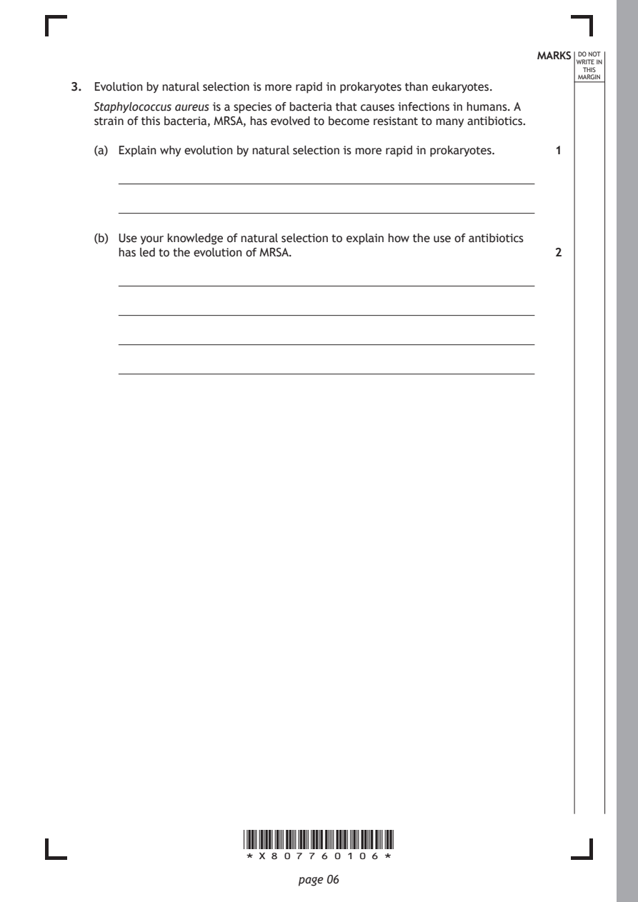
Selectable page text
MARKS _{W}^{D}_{R}^{O}_{I} _{T}^{N}OT
E IN
THIS
MARGIN
3. Evolution by natural selection is more rapid in prokaryotes than eukaryotes.
Staphylococcus aureus is a species of bacteria that causes infections in humans. A
strain of this bacteria, MRSA, has evolved to become resistant to many antibiotics.
(a) Explain why evolution by natural selection is more rapid in prokaryotes. 1
(b) Use your knowledge of natural selection to explain how the use of antibiotics
has led to the evolution of MRSA. 2
*X807760106*
page 06PDF page 7
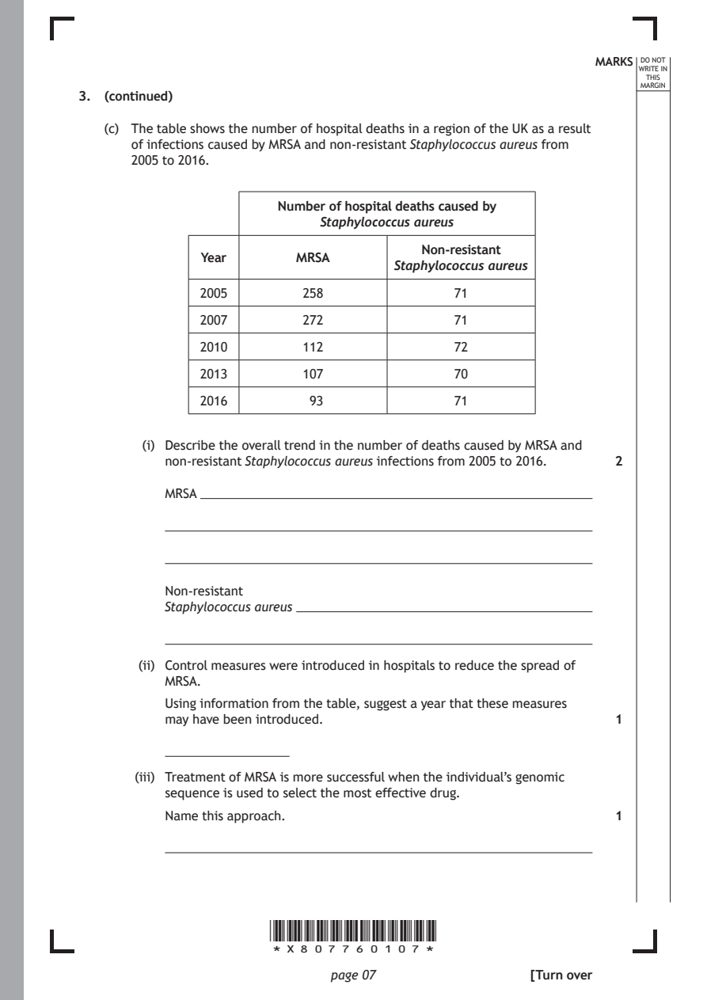
Selectable page text
MARKS _{W}^{D}_{R}^{O}_{I} _{T}^{N}OT
E IN
THIS
MARGIN
3. (continued)
(c) The table shows the number of hospital deaths in a region of the UK as a result
of infections caused by MRSA and non-resistant Staphylococcus aureus from
2005 to 2016.
Number of hospital deaths caused by
Staphylococcus aureus
Non-resistant
Year MRSA
Staphylococcus aureus
2005 258 71
2007 272 71
2010 112 72
2013 107 70
2016 93 71
(i) Describe the overall trend in the number of deaths caused by MRSA and
non-resistant Staphylococcus aureus infections from 2005 to 2016. 2
MRSA
Non-resistant
Staphylococcus aureus
(ii) Control measures were introduced in hospitals to reduce the spread of
MRSA.
Using information from the table, suggest a year that these measures
may have been introduced. 1
(iii) Treatment of MRSA is more successful when the individual’s genomic
sequence is used to select the most effective drug.
Name this approach. 1
*X807760107*
page 07 [Turn overPDF page 8
Paper 2, Question 4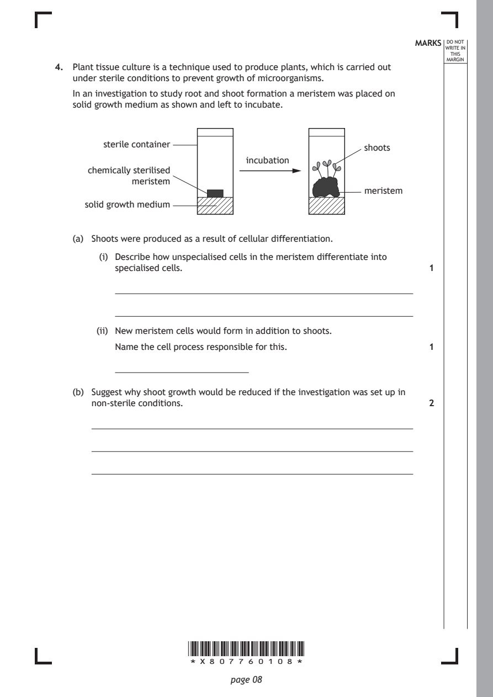
Selectable page text
MARKS _{W}^{D}_{R}^{O}_{I} _{T}^{N}OT
E IN
THIS
MARGIN
4. Plant tissue culture is a technique used to produce plants, which is carried out
under sterile conditions to prevent growth of microorganisms.
In an investigation to study root and shoot formation a meristem was placed on
solid growth medium as shown and left to incubate.
sterile container
shoots
incubation
chemically sterilised
meristem
meristem
solid growth medium
(a) Shoots were produced as a result of cellular differentiation.
(i) Describe how unspecialised cells in the meristem differentiate into
specialised cells. 1
(ii) New meristem cells would form in addition to shoots.
Name the cell process responsible for this. 1
(b) Suggest why shoot growth would be reduced if the investigation was set up in
non-sterile conditions. 2
*X807760108*
page 08PDF page 9
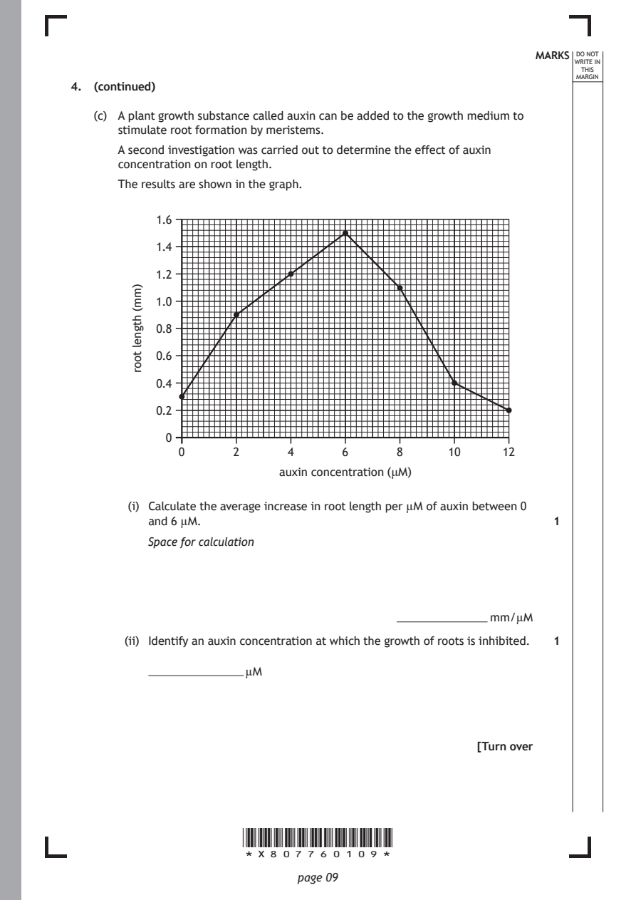
Selectable page text
MARKS _{W}^{D}_{R}^{O}_{I} _{T}^{N}OT
E IN
THIS
MARGIN
4. (continued)
(c) A plant growth substance called auxin can be added to the growth medium to
stimulate root formation by meristems.
A second investigation was carried out to determine the effect of auxin
concentration on root length.
The results are shown in the graph.
0 2 4 6 8 10 12
auxin concentration (μM)
*X807760109*
page 09
)mm(
htgnel
toor
1.6
1.4
1.2
1.0
0.8
0.6
0.4
0.2
0
(i) Calculate the average increase in root length per µM of auxin between 0
and 6 µM. 1
Space for calculation
mm/µM
(ii) Identify an auxin concentration at which the growth of roots is inhibited. 1
µM
[Turn overPDF page 10
Paper 2, Question 5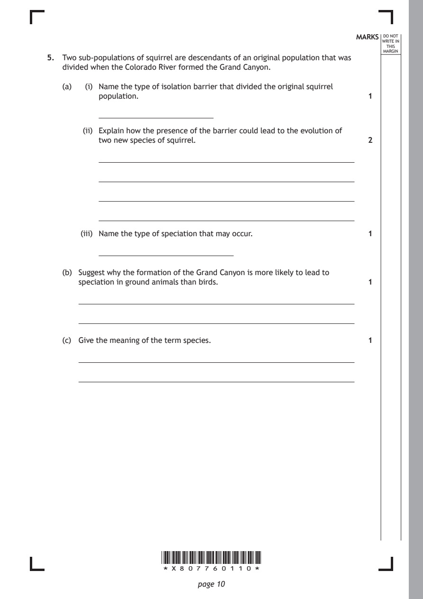
Selectable page text
MARKS _{W}^{D}_{R}^{O}_{I} _{T}^{N}OT
E IN
THIS
MARGIN
5. Two sub-populations of squirrel are descendants of an original population that was
divided when the Colorado River formed the Grand Canyon.
(a) (i) Name the type of isolation barrier that divided the original squirrel
population. 1
(ii) Explain how the presence of the barrier could lead to the evolution of
two new species of squirrel. 2
(iii) Name the type of speciation that may occur. 1
(b) Suggest why the formation of the Grand Canyon is more likely to lead to
speciation in ground animals than birds. 1
(c) Give the meaning of the term species. 1
*X807760110*
page 10PDF page 11
Paper 2, Question 6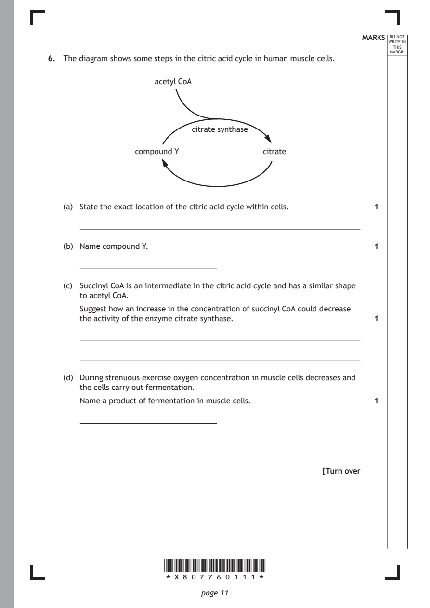
Selectable page text
MARKS _{W}^{D}_{R}^{O}_{I} _{T}^{N}OT
E IN
THIS
MARGIN
6. The diagram shows some steps in the citric acid cycle in human muscle cells.
acetyl CoA
citrate synthase
compound Y citrate
(a) State the exact location of the citric acid cycle within cells. 1
(b) Name compound Y. 1
(c) Succinyl CoA is an intermediate in the citric acid cycle and has a similar shape
to acetyl CoA.
Suggest how an increase in the concentration of succinyl CoA could decrease
the activity of the enzyme citrate synthase. 1
(d) During strenuous exercise oxygen concentration in muscle cells decreases and
the cells carry out fermentation.
Name a product of fermentation in muscle cells. 1
[Turn over
*X807760111*
page 11PDF page 12
Paper 2, Question 7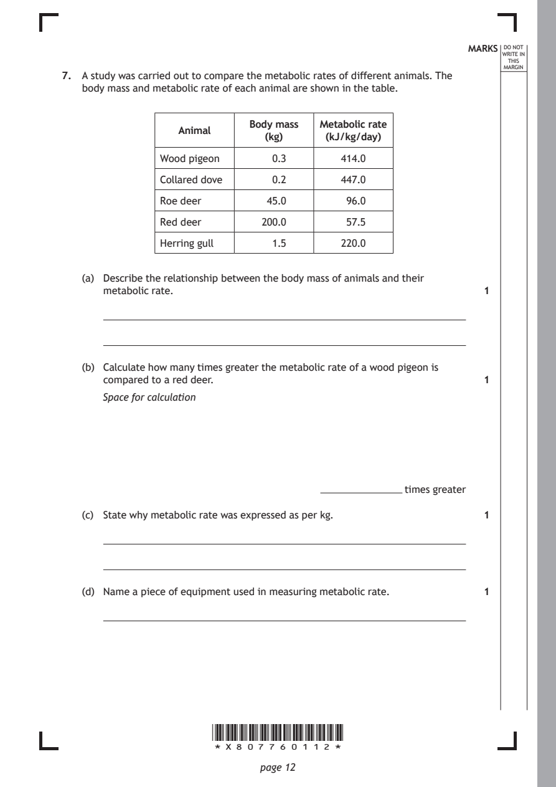
Selectable page text
MARKS _{W}^{D}_{R}^{O}_{I} _{T}^{N}OT
E IN
THIS
MARGIN
7. A study was carried out to compare the metabolic rates of different animals. The
body mass and metabolic rate of each animal are shown in the table.
Body mass Metabolic rate
Animal
(kg) (kJ/kg/day)
Wood pigeon 0.3 414.0
Collared dove 0.2 447.0
Roe deer 45.0 96.0
Red deer 200.0 57.5
Herring gull 1.5 220.0
(a) Describe the relationship between the body mass of animals and their
metabolic rate. 1
(b) Calculate how many times greater the metabolic rate of a wood pigeon is
compared to a red deer. 1
Space for calculation
times greater
(c) State why metabolic rate was expressed as per kg. 1
(d) Name a piece of equipment used in measuring metabolic rate. 1
*X807760112*
page 12PDF page 13
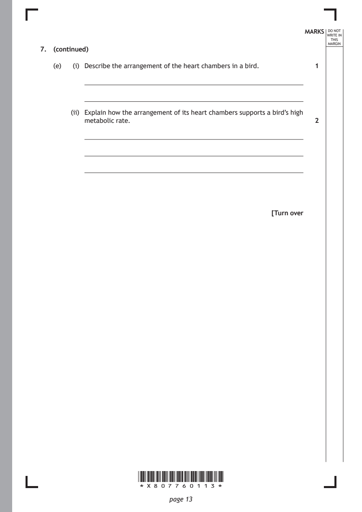
Selectable page text
MARKS _{W}^{D}_{R}^{O}_{I} _{T}^{N}OT
E IN
THIS
MARGIN
7. (continued)
(e) (i) Describe the arrangement of the heart chambers in a bird. 1
(ii) Explain how the arrangement of its heart chambers supports a bird’s high
metabolic rate. 2
[Turn over
*X807760113*
page 13PDF page 14
Paper 2, Question 8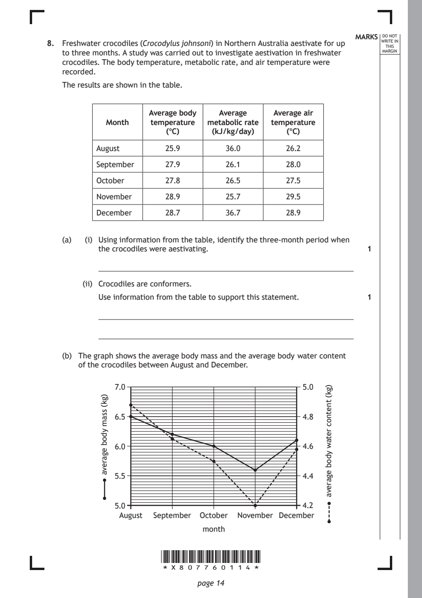
Selectable page text
MARKS _{W}^{D}_{R}^{O}_{I} _{T}^{N}OT
8. Freshwater crocodiles (Crocodylus johnsoni) in Northern Australia aestivate for up E IN
THIS
to three months. A study was carried out to investigate aestivation in freshwater MARGIN
crocodiles. The body temperature, metabolic rate, and air temperature were
recorded.
The results are shown in the table.
Average body Average Average air
Month temperature metabolic rate temperature
(°C) (kJ/kg/day) (°C)
August 25.9 36.0 26.2
September 27.9 26.1 28.0
October 27.8 26.5 27.5
November 28.9 25.7 29.5
December 28.7 36.7 28.9
(a) (i) Using information from the table, identify the three-month period when
the crocodiles were aestivating.
(ii) Crocodiles are conformers.
Use information from the table to support this statement.
(b) The graph shows the average body mass and the average body water content
of the crocodiles between August and December.
August September October November December
month
*X807760114*
page 14
)gk(
ssam
ydob
egareva
)gk(
tnetnoc
retaw
ydob
egareva
1
1
7.0 5.0
6.5 4.8
6.0 4.6
5.5 4.4
5.0 4.2PDF page 15
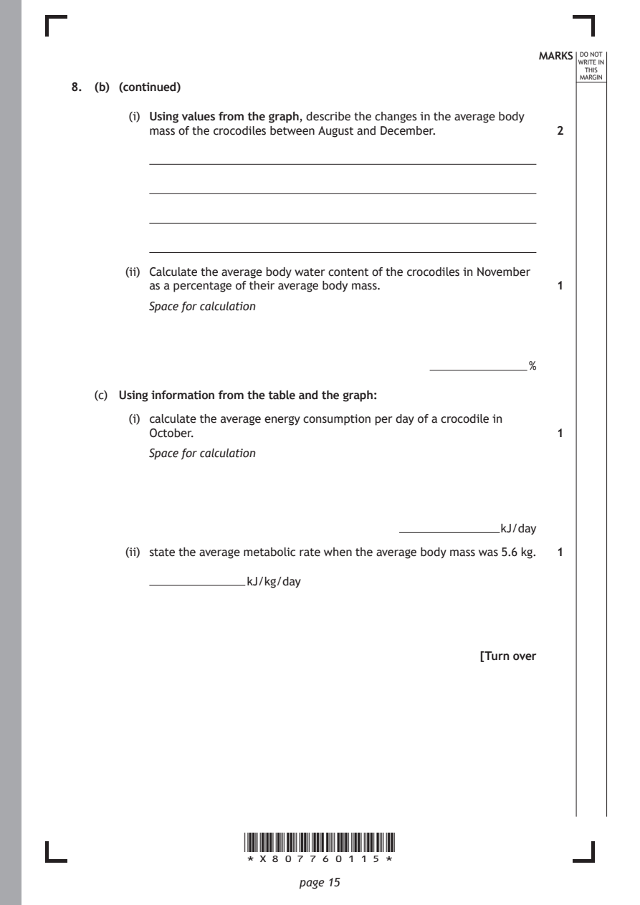
Selectable page text
MARKS _{W}^{D}_{R}^{O}_{I} _{T}^{N}OT
E IN
THIS
MARGIN
8. (b) (continued)
(i) Using values from the graph, describe the changes in the average body
mass of the crocodiles between August and December. 2
(ii) Calculate the average body water content of the crocodiles in November
as a percentage of their average body mass. 1
Space for calculation
%
(c) Using information from the table and the graph:
(i) calculate the average energy consumption per day of a crocodile in
October. 1
Space for calculation
kJ/day
(ii) state the average metabolic rate when the average body mass was 5.6 kg. 1
kJ/kg/day
[Turn over
*X807760115*
page 15PDF page 16
Paper 2, Question 9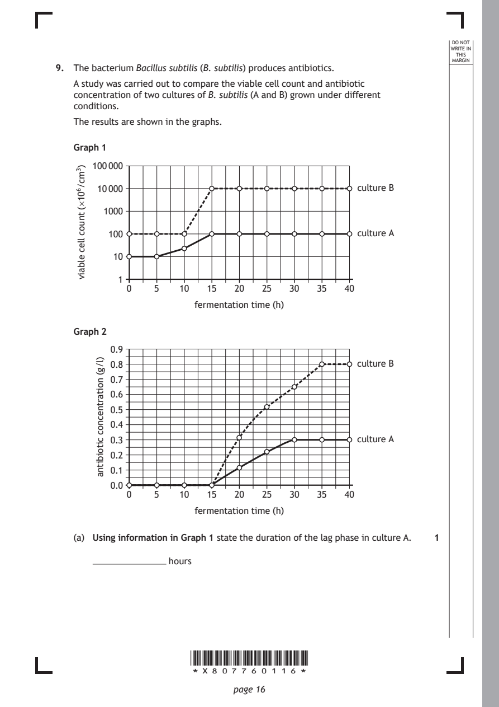
Selectable page text
DO NOT
WRITE IN
THIS
MARGIN
9. The bacterium Bacillus subtilis (B. subtilis) produces antibiotics.
A study was carried out to compare the viable cell count and antibiotic
concentration of two cultures of B. subtilis (A and B) grown under different
conditions.
The results are shown in the graphs.
Graph 1
100 000
10 000
1000
100
10
1
0 5 10 15 20 25 30 35 40
*X807760116*
page 16
)3mc/601×(
tnuoc
llec
elbaiv
culture B
culture A
fermentation time (h)
Graph 2
0.9
0.8
0.7
0.6
0.5
0.4
0.3
0.2
0.1
0.0
0 5 10 15 20 25 30 35 40
)l/g(
noitartnecnoc
citoibitna
culture B
culture A
fermentation time (h)
(a) Using information in Graph 1 state the duration of the lag phase in culture A. 1
hoursPDF page 17
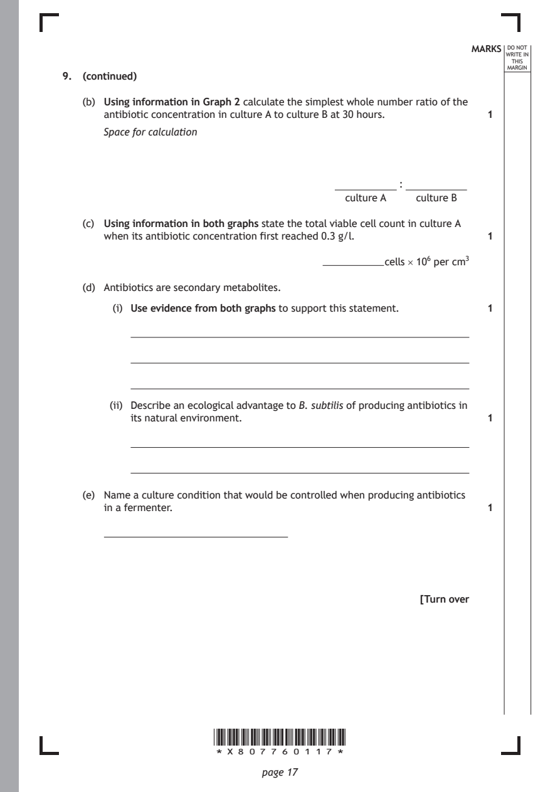
Selectable page text
MARKS _{W}^{D}_{R}^{O}_{I} _{T}^{N}OT
E IN
THIS
MARGIN
9. (continued)
(b) Using information in Graph 2 calculate the simplest whole number ratio of the
antibiotic concentration in culture A to culture B at 30 hours. 1
Space for calculation
:
culture A culture B
(c) Using information in both graphs state the total viable cell count in culture A
when its antibiotic concentration first reached 0.3 g/l. 1
cells × 10⁶ per cm³
(d) Antibiotics are secondary metabolites.
(i) Use evidence from both graphs to support this statement. 1
(ii) Describe an ecological advantage to B. subtilis of producing antibiotics in
its natural environment. 1
(e) Name a culture condition that would be controlled when producing antibiotics
in a fermenter. 1
[Turn over
*X807760117*
page 17PDF page 18
Paper 2, Question 10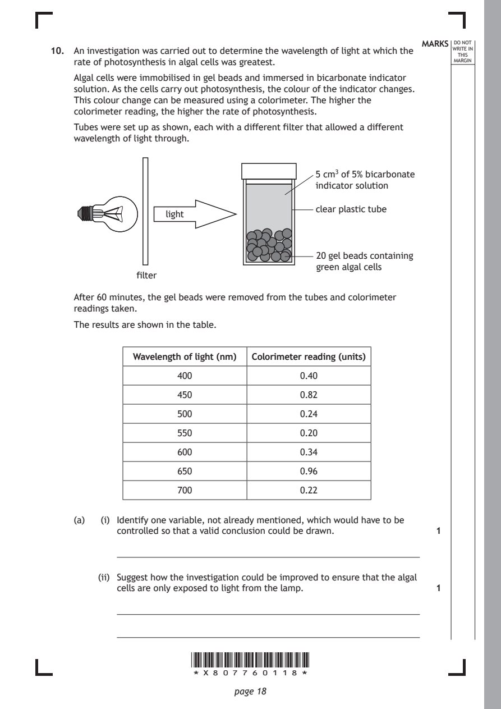
Selectable page text
MARKS _{W}^{D}_{R}^{O}_{I} _{T}^{N}OT
10. An investigation was carried out to determine the wavelength of light at which the E IN
THIS
rate of photosynthesis in algal cells was greatest. MARGIN
Algal cells were immobilised in gel beads and immersed in bicarbonate indicator
solution. As the cells carry out photosynthesis, the colour of the indicator changes.
This colour change can be measured using a colorimeter. The higher the
colorimeter reading, the higher the rate of photosynthesis.
Tubes were set up as shown, each with a different filter that allowed a different
wavelength of light through.
5 cm³ of 5% bicarbonate
indicator solution
clear plastic tube
light
20 gel beads containing
green algal cells
filter
After 60 minutes, the gel beads were removed from the tubes and colorimeter
readings taken.
The results are shown in the table.
Wavelength of light (nm) Colorimeter reading (units)
400 0.40
450 0.82
500 0.24
550 0.20
600 0.34
650 0.96
700 0.22
(a) (i) Identify one variable, not already mentioned, which would have to be
controlled so that a valid conclusion could be drawn. 1
(ii) Suggest how the investigation could be improved to ensure that the algal
cells are only exposed to light from the lamp. 1
*X807760118*
page 18PDF page 19
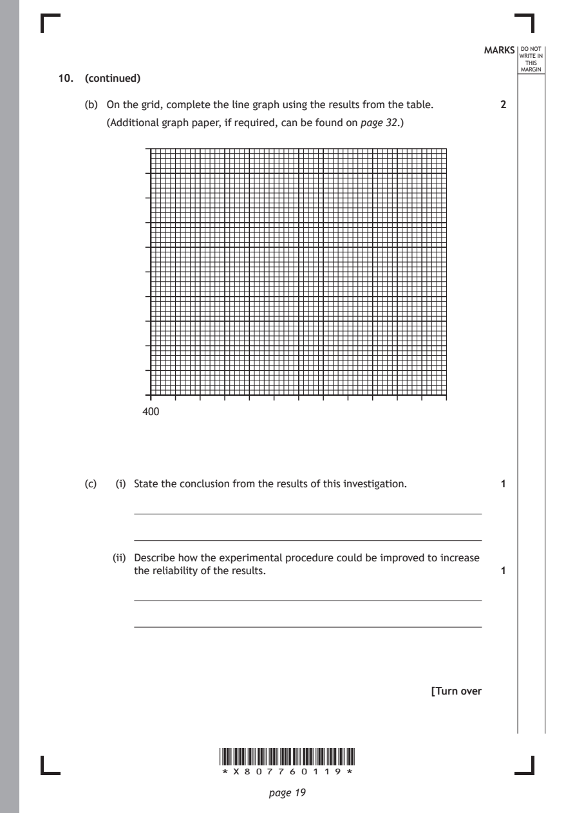
Selectable page text
MARKS _{W}^{D}_{R}^{O}_{I} _{T}^{N}OT
E IN
THIS
MARGIN
10. (continued)
(b) On the grid, complete the line graph using the results from the table. 2
(Additional graph paper, if required, can be found on page 32.)
400
(c) (i) State the conclusion from the results of this investigation. 1
(ii) Describe how the experimental procedure could be improved to increase
the reliability of the results. 1
[Turn over
*X807760119*
page 19PDF page 20
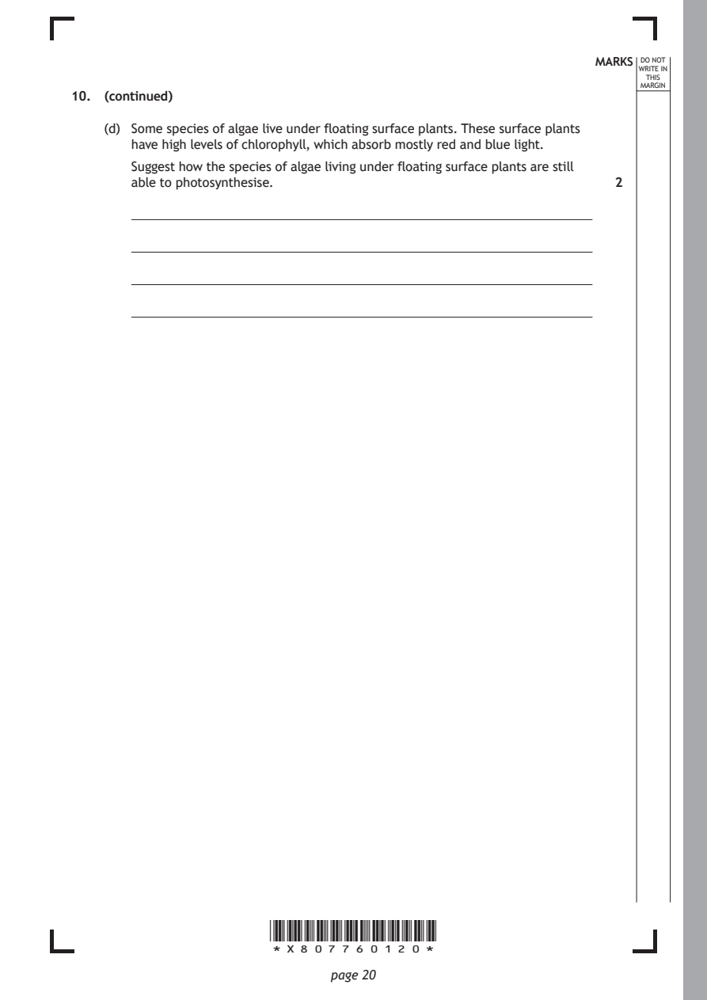
Selectable page text
MARKS _{W}^{D}_{R}^{O}_{I} _{T}^{N}OT
E IN
THIS
MARGIN
10. (continued)
(d) Some species of algae live under floating surface plants. These surface plants
have high levels of chlorophyll, which absorb mostly red and blue light.
Suggest how the species of algae living under floating surface plants are still
able to photosynthesise. 2
*X807760120*
page 20PDF page 21
Paper 2, Question 11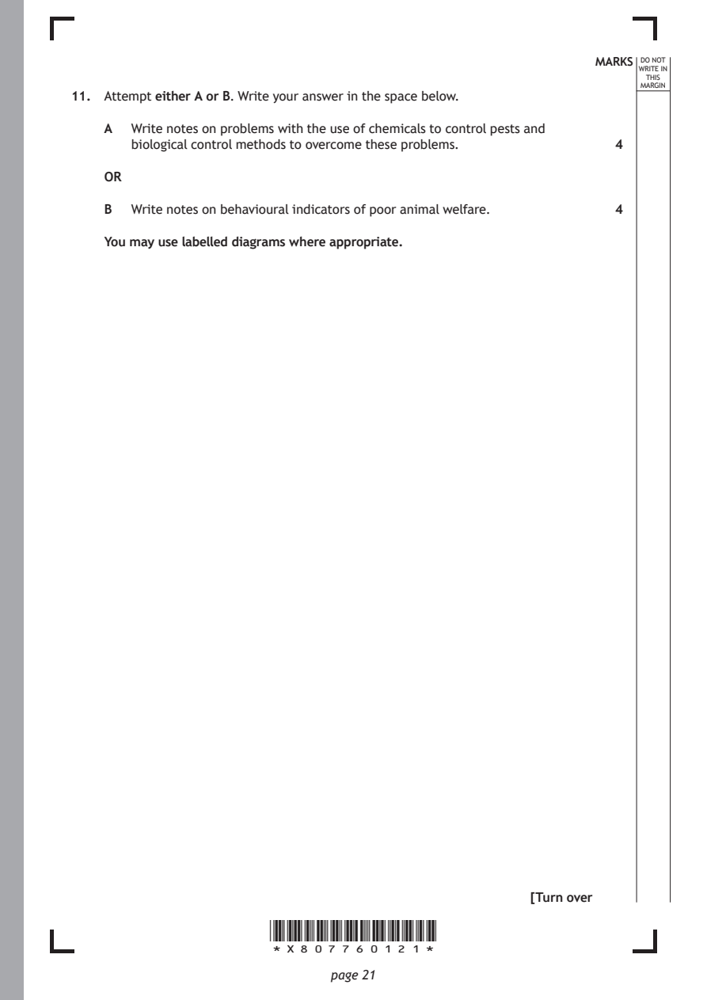
Selectable page text
MARKS _{W}^{D}_{R}^{O}_{I} _{T}^{N}OT
E IN
THIS
MARGIN
11. Attempt either A or B. Write your answer in the space below.
A Write notes on problems with the use of chemicals to control pests and
biological control methods to overcome these problems. 4
OR
B Write notes on behavioural indicators of poor animal welfare. 4
You may use labelled diagrams where appropriate.
[Turn over
*X807760121*
page 21PDF page 22
Paper 2, Question 12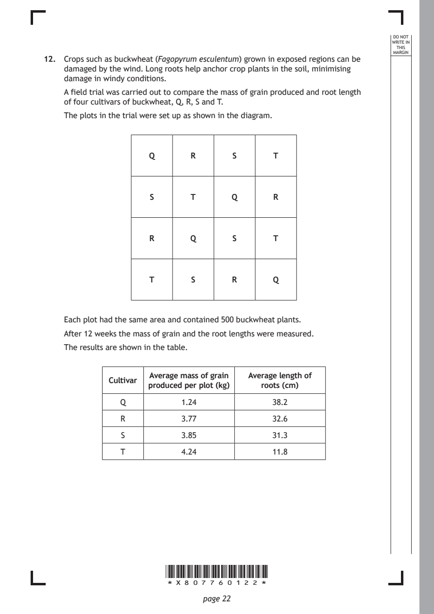
Selectable page text
DO NOT
WRITE IN
THIS
MARGIN
12. Crops such as buckwheat (Fagopyrum esculentum) grown in exposed regions can be
damaged by the wind. Long roots help anchor crop plants in the soil, minimising
damage in windy conditions.
A field trial was carried out to compare the mass of grain produced and root length
of four cultivars of buckwheat, Q, R, S and T.
The plots in the trial were set up as shown in the diagram.
Q R S T
S T Q R
R Q S T
T S R Q
Each plot had the same area and contained 500 buckwheat plants.
After 12 weeks the mass of grain and the root lengths were measured.
The results are shown in the table.
Average mass of grain Average length of
Cultivar
produced per plot (kg) roots (cm)
Q 1.24 38.2
R 3.77 32.6
S 3.85 31.3
T 4.24 11.8
*X807760122*
page 22PDF page 23
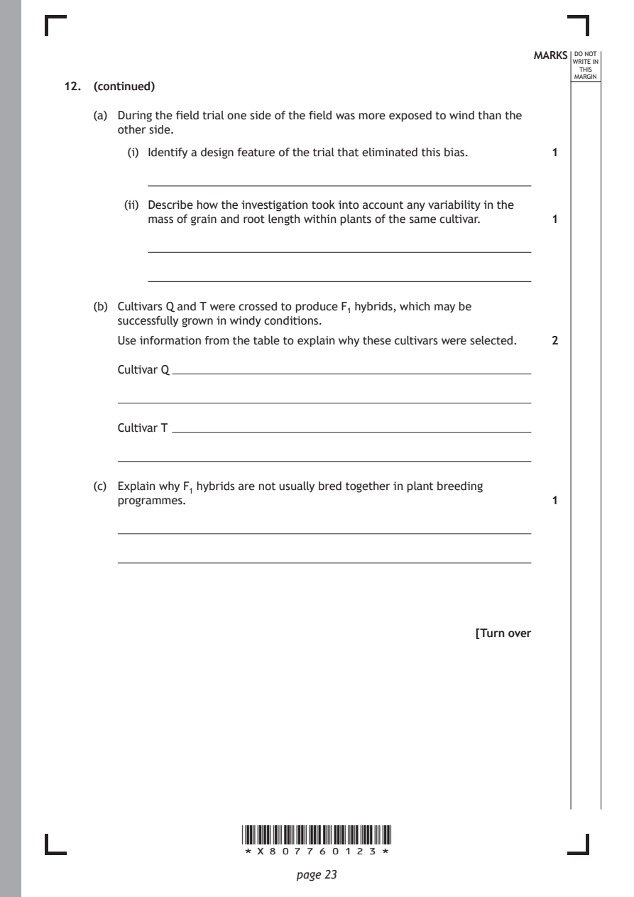
Selectable page text
MARKS _{W}^{D}_{R}^{O}_{I} _{T}^{N}OT
E IN
THIS
MARGIN
12. (continued)
(a) During the field trial one side of the field was more exposed to wind than the
other side.
(i) Identify a design feature of the trial that eliminated this bias. 1
(ii) Describe how the investigation took into account any variability in the
mass of grain and root length within plants of the same cultivar. 1
(b) Cultivars Q and T were crossed to produce F₁ hybrids, which may be
successfully grown in windy conditions.
Use information from the table to explain why these cultivars were selected. 2
Cultivar Q
Cultivar T
(c) Explain why F₁ hybrids are not usually bred together in plant breeding
programmes. 1
[Turn over
*X807760123*
page 23PDF page 24
Paper 2, Question 13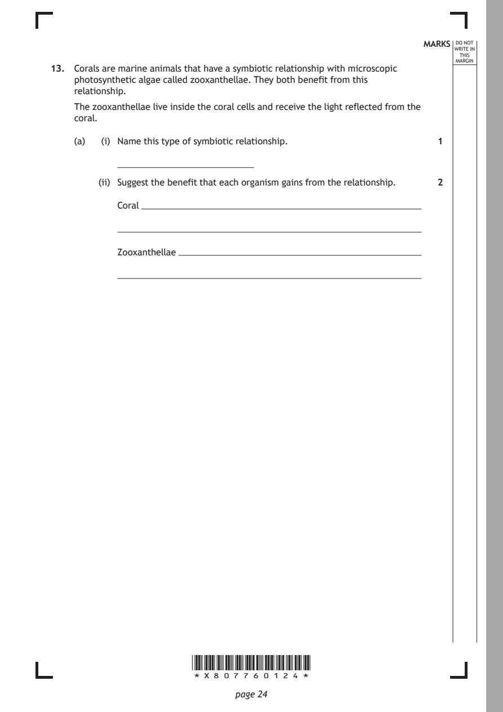
Selectable page text
MARKS _{W}^{D}_{R}^{O}_{I} _{T}^{N}OT
E IN
THIS
MARGIN
13. Corals are marine animals that have a symbiotic relationship with microscopic
photosynthetic algae called zooxanthellae. They both benefit from this
relationship.
The zooxanthellae live inside the coral cells and receive the light reflected from the
coral.
(a) (i) Name this type of symbiotic relationship. 1
(ii) Suggest the benefit that each organism gains from the relationship. 2
Coral
Zooxanthellae
*X807760124*
page 24PDF page 25
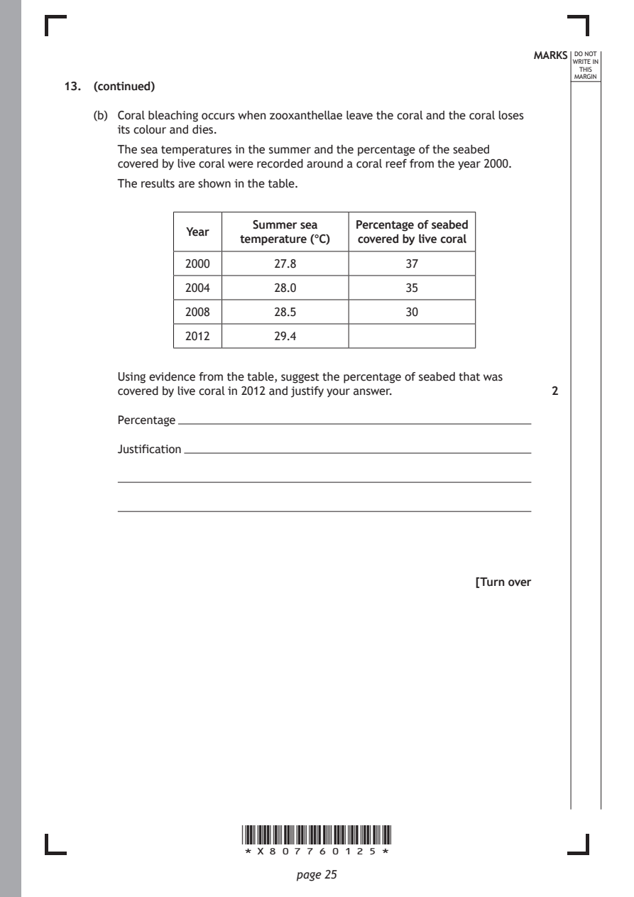
Selectable page text
MARKS _{W}^{D}_{R}^{O}_{I} _{T}^{N}OT
E IN
THIS
MARGIN
13. (continued)
(b) Coral bleaching occurs when zooxanthellae leave the coral and the coral loses
its colour and dies.
The sea temperatures in the summer and the percentage of the seabed
covered by live coral were recorded around a coral reef from the year 2000.
The results are shown in the table.
Summer sea Percentage of seabed
Year
temperature (°C) covered by live coral
2000 27.8 37
2004 28.0 35
2008 28.5 30
2012 29.4
Using evidence from the table, suggest the percentage of seabed that was
covered by live coral in 2012 and justify your answer. 2
Percentage
Justification
[Turn over
*X807760125*
page 25PDF page 26
Paper 2, Question 14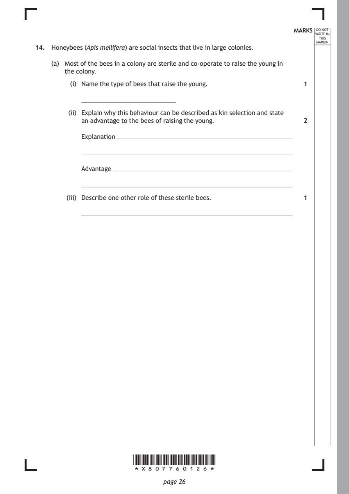
Selectable page text
MARKS _{W}^{D}_{R}^{O}_{I} _{T}^{N}OT
E IN
THIS
MARGIN
14. Honeybees (Apis mellifera) are social insects that live in large colonies.
(a) Most of the bees in a colony are sterile and co-operate to raise the young in
the colony.
(i) Name the type of bees that raise the young. 1
(ii) Explain why this behaviour can be described as kin selection and state
an advantage to the bees of raising the young. 2
Explanation
Advantage
(iii) Describe one other role of these sterile bees. 1
*X807760126*
page 26PDF page 27
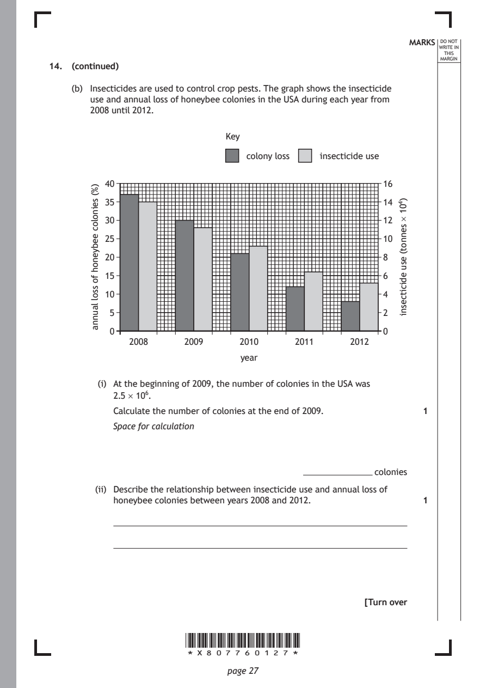
Selectable page text
MARKS _{W}^{D}_{R}^{O}_{I} _{T}^{N}OT
E IN
THIS
MARGIN
14. (continued)
(b) Insecticides are used to control crop pests. The graph shows the insecticide
use and annual loss of honeybee colonies in the USA during each year from
2008 until 2012.
40
35
30
25
20
15
10
5
0
*X807760127*
page 27
)%(
seinoloc
eebyenoh
fo
ssol
launna
0
)401
×
sennot(
esu
edicitcesni
Key
colony loss insecticide use
16
14
12
10
8
6
4
2
2008 2009 2010 2011 2012
year
(i) At the beginning of 2009, the number of colonies in the USA was
2.5 × 10⁶.
Calculate the number of colonies at the end of 2009. 1
Space for calculation
colonies
(ii) Describe the relationship between insecticide use and annual loss of
honeybee colonies between years 2008 and 2012. 1
[Turn overPDF page 28
Paper 2, Question 15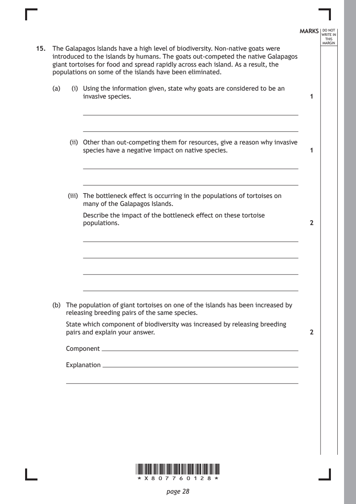
Selectable page text
MARKS _{W}^{D}_{R}^{O}_{I} _{T}^{N}OT
E IN
THIS
MARGIN
15. The Galapagos Islands have a high level of biodiversity. Non-native goats were
introduced to the islands by humans. The goats out-competed the native Galapagos
giant tortoises for food and spread rapidly across each island. As a result, the
populations on some of the islands have been eliminated.
(a) (i) Using the information given, state why goats are considered to be an
invasive species. 1
(ii) Other than out-competing them for resources, give a reason why invasive
species have a negative impact on native species. 1
(iii) The bottleneck effect is occurring in the populations of tortoises on
many of the Galapagos Islands.
Describe the impact of the bottleneck effect on these tortoise
populations. 2
(b) The population of giant tortoises on one of the islands has been increased by
releasing breeding pairs of the same species.
State which component of biodiversity was increased by releasing breeding
pairs and explain your answer. 2
Component
Explanation
*X807760128*
page 28PDF page 29
Paper 2, Question 16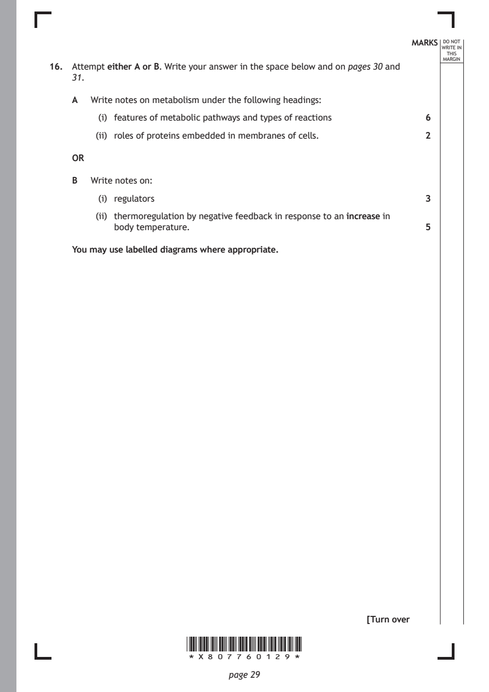
Selectable page text
MARKS _{W}^{D}_{R}^{O}_{I} _{T}^{N}OT
E IN
THIS
MARGIN
16. Attempt either A or B. Write your answer in the space below and on pages 30 and
31.
A Write notes on metabolism under the following headings:
(i) features of metabolic pathways and types of reactions 6
(ii) roles of proteins embedded in membranes of cells. 2
OR
B Write notes on:
(i) regulators 3
(ii) thermoregulation by negative feedback in response to an increase in
body temperature. 5
You may use labelled diagrams where appropriate.
[Turn over
*X807760129*
page 29PDF page 30
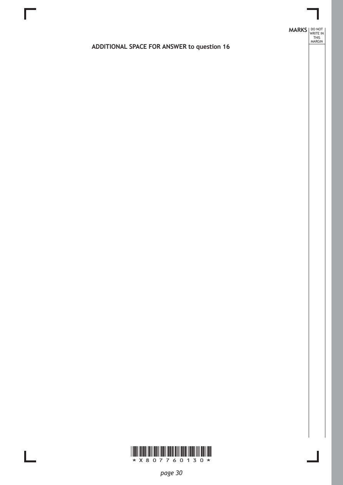
Selectable page text
MARKS _{W}^{D}_{R}^{O}_{I} _{T}^{N}OT
E IN
THIS
MARGIN
ADDITIONAL SPACE FOR ANSWER to question 16
*X807760130*
page 30PDF page 31
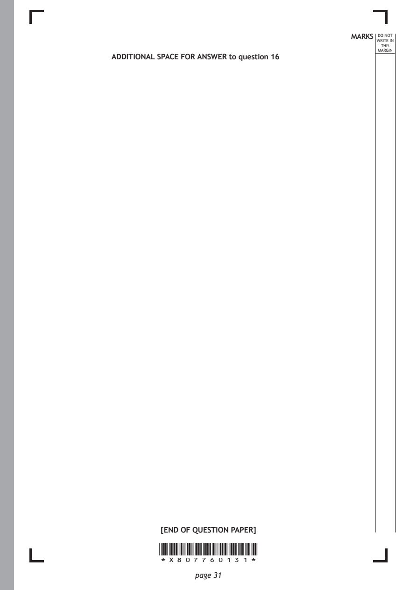
Selectable page text
MARKS _{W}^{D}_{R}^{O}_{I} _{T}^{N}OT
E IN
THIS
MARGIN
ADDITIONAL SPACE FOR ANSWER to question 16
[END OF QUESTION PAPER]
*X807760131*
page 31PDF page 32
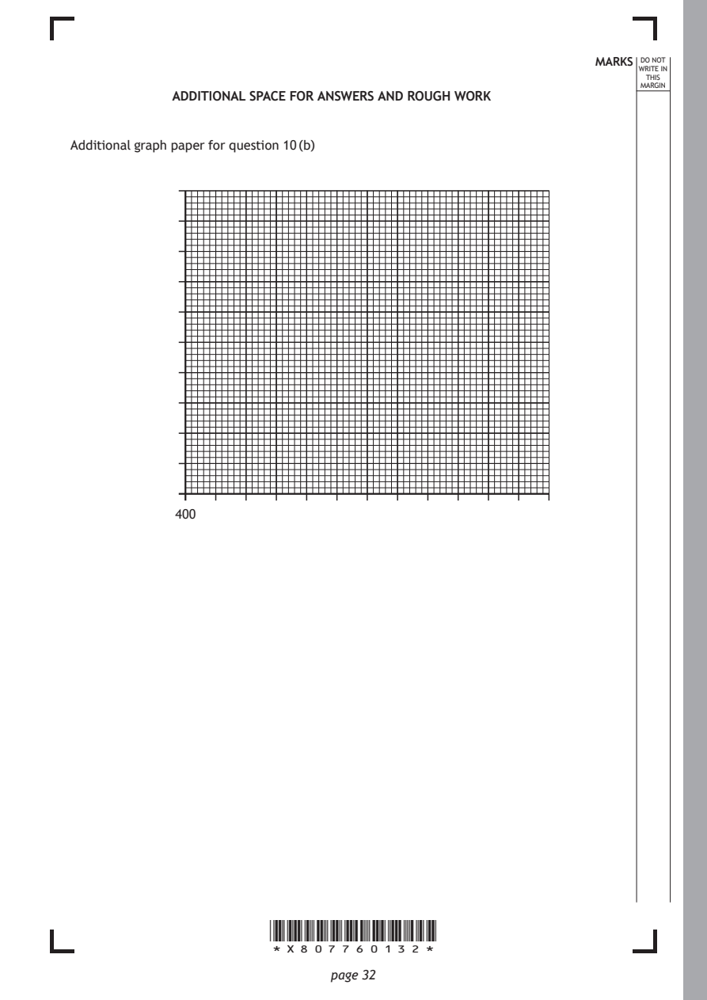
Selectable page text
MARKS _{W}^{D}_{R}^{O}_{I} _{T}^{N}OT
E IN
THIS
MARGIN
ADDITIONAL SPACE FOR ANSWERS AND ROUGH WORK
Additional graph paper for question 10 (b)
400
*X807760132*
page 32PDF page 33
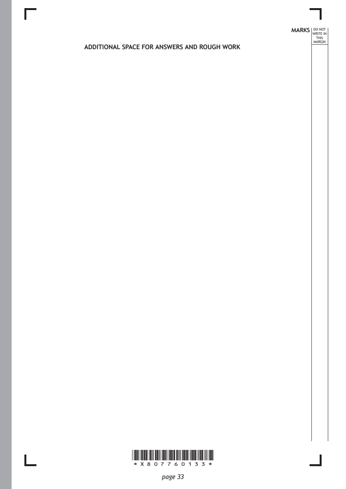
Selectable page text
MARKS _{W}^{D}_{R}^{O}_{I} _{T}^{N}OT
E IN
THIS
MARGIN
ADDITIONAL SPACE FOR ANSWERS AND ROUGH WORK
*X807760133*
page 33PDF page 34
Selectable page text
MARKS _{W}^{D}_{R}^{O}_{I} _{T}^{N}OT
E IN
THIS
MARGIN
ADDITIONAL SPACE FOR ANSWERS AND ROUGH WORK
*X807760134*
page 34PDF page 35

Selectable page text
[BLANK PAGE]
DO NOT WRITE ON THIS PAGE
*X807760135*
page 35PDF page 36
Selectable page text
[BLANK PAGE]
DO NOT WRITE ON THIS PAGE
*X807760136*
page 36